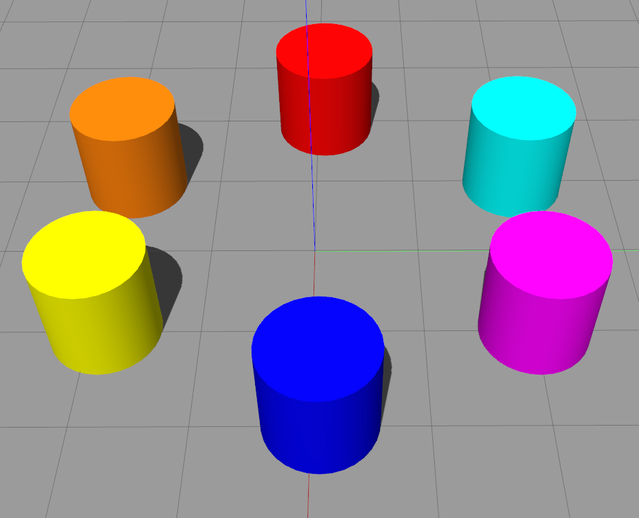

Demos on Gazebo¶
Before getting started see: Before starting.
The following packages are needed to run the demos:
For 2D mapping:
sudo apt update sudo apt install ros-melodic-depthimage-to-laserscan sudo apt install ros-melodic-cartographer-ros sudo apt install ros-melodic-move-base
For 3D mapping:
sudo apt install ros-melodic-rtabmap-ros
For AR tracking:
sudo apt install ros-melodic-ar-track-alvar
Launching the Simulation¶
To launch the simulator:
roslaunch robotont_gazebo gazebo.launch
The launch file has four arguments:
model - chooses between a model with NUC and realsense and a model without them
- default: robotont_gazebo_nuc
- options: robotont_gazebo_nuc, robotont_gazebo_basic
world - chooses which world to use
- default: empty.world
- options: empty.world, minimaze.world, bangbang.world, between.world, colors.world
x_pos - chooses x coordinate of the world, controls where the robot will spawn, default: 0
driver_hack: chooses whether a driver_hack will be used or not, is necessary if the robot will turn very slowly while using the simulator
- default: true
- options: true, false
For example, the following command will spawn the robot to a map called bangbang.world in position x=2, the model that will be used is robotont_gazebo_nuc and driver_hack will be on.
roslaunch robotont_gazebo gazebo.launch world:=$(rospack find robotont_gazebo)/worlds/bangbang.world model:=robotont_gazebo_nuc x_pos:=2 driver_hack:=true
Worlds¶
minimaze.world

To run
roslaunch robotont_gazebo world_minimaze.launch
bangbang.world

To run
roslaunch robotont_gazebo world_bangbang.launch
between.world

To run
roslaunch robotont_gazebo world_between.launch
colors.world
To run
roslaunch robotont_gazebo world_colors.launch
2D Mapping¶
Uses Cartographer to create a 2D map of the robot’s surroundings.
Launch the simulator
roslaunch robotont_gazebo world_minimaze.launch
Launch teleop keyboard
roslaunch robotont_demos teleop_keyboard.launch
Launch 2d_slam.launch
roslaunch robotont_demos 2d_slam.launch
Display the map on RViz
roslaunch robotont_demos 2d_slam_display.launch
Setting 2D navigation goals¶
Using the navstack in ROS is very straightforward, you tell the robot where it is (if it doesnt already know) and where it needs to go.
For setting initial pose, click on 2D Pose Estimate and drag the arrow where and how the robot actually is.

To tell the robot where to go, click on 2D Nav Goal and drag the arrow to where you want the robot to go and which way does it have to face.

{kind=link}
3D mapping¶
Creates a 3D map of the robot’s surroundings.
Launch the simulator
roslaunch robotont_gazebo world_colors.launch
Launch 3d_mapping.launch
roslaunch robotont_demos 3d_mapping.launch
Launch 3d_mapping_display.launch to visualize the result
roslaunch robotont_demos 3d_mapping_display.launch
To move the robot open another terminal window and run teleop twist keyboard
rosrun robotont_demos teleop_keyboard.launch
Hint
Notice that the teleop node only receives keypresses when the terminal window is active.
{kind=link}